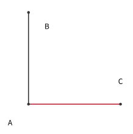
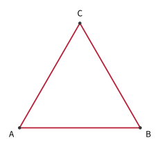
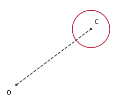

別冊章末問題の解答
1. \(z_1=2 \sqrt{2} + 2 \sqrt{2} i,\ z_2=- \sqrt{2} + \sqrt{2} i\) のとき、\(z_1z_2\) と \(\dfrac{z_1}{z_2}\) を、極形式を用いて計算せよ。
極形式にする
\(z=r(\cos\theta+i\sin\theta)\)。
\[z_1=4\left(\cos\dfrac{\pi}{4}+i\sin\dfrac{\pi}{4}\right),\qquad z_2=2\left(\cos\dfrac{3 \pi}{4}+i\sin\dfrac{3 \pi}{4}\right)\]積
\(z_1z_2=r_1r_2\{\cos(\theta_1+\theta_2)+i\sin(\theta_1+\theta_2)\}\)。
\[z_1z_2=8\left(\cos\pi+i\sin\pi\right)=-8\]商
\(\dfrac{z_1}{z_2}=\dfrac{r_1}{r_2}\{\cos(\theta_1-\theta_2)+i\sin(\theta_1-\theta_2)\}\)。
\[\dfrac{z_1}{z_2}=2.0\left(\cos- \dfrac{\pi}{2}+i\sin- \dfrac{\pi}{2}\right)=- 2 i\]（例題1の型）
【答案】
\[z_1z_2=-8,\ \dfrac{z_1}{z_2}=- 2 i\]答
2. \(\left(\sqrt{3} - i\right)^{9}\) を計算せよ。
極形式にする
\[|z|=2,\quad \arg z=- \dfrac{\pi}{6}\]\[z=2\left(\cos- \dfrac{\pi}{6}+i\sin- \dfrac{\pi}{6}\right)\]ド・モアブルの定理
\(z^n=r^n(\cos n\theta+i\sin n\theta)\)。
\[z^{9}=\left(2\right)^{9}\left\{\cos\left(9\cdot- \dfrac{\pi}{6}\right)+i\sin\left(9\cdot- \dfrac{\pi}{6}\right)\right\}\]値を求める
\[z^{9}=512\left(\cos- \dfrac{3 \pi}{2}+i\sin- \dfrac{3 \pi}{2}\right)=512 i\]（例題2の型）
【答案】
\[512 i\]答
3. 方程式 \(z^{3}=-1\) を解け。
右辺を極形式にする
\[-1=1\left(\cos\pi+i\sin\pi\right)\]解を極形式で書く
\(z=1(\cos\phi+i\sin\phi)\) とおくと、ド・モアブルより \(z^{3}=1(\cos3\phi+i\sin3\phi)\)。
\[3\phi=\pi+2k\pi\ \Rightarrow\ \phi=\dfrac{\pi+2k\pi}{3}\quad(k=0,1,\cdots,2)\]\(k\) に値を代入する
\[k=0:\ z=1\left(\cos\dfrac{\pi}{3}+i\sin\dfrac{\pi}{3}\right)=\dfrac{1}{2} + \dfrac{\sqrt{3} i}{2}\\ k=1:\ z=1\left(\cos\pi+i\sin\pi\right)=-1\\ k=2:\ z=1\left(\cos\dfrac{5 \pi}{3}+i\sin\dfrac{5 \pi}{3}\right)=\dfrac{1}{2} - \dfrac{\sqrt{3} i}{2}\]解は複素数平面上で、原点中心・半径 \(1\) の円に内接する正 \(3\) 角形の頂点。

（例題3の型）
【答案】
\[z=\dfrac{1}{2} + \dfrac{\sqrt{3} i}{2},\ -1,\ \dfrac{1}{2} - \dfrac{\sqrt{3} i}{2}\]答
4. 複素数平面上の3点 \(A(0),\ B(2),\ C(-1 + \sqrt{3} i)\) について、\(\dfrac{\gamma-\alpha}{\beta-\alpha}\) を計算し、△\(ABC\) がどんな三角形か答えよ。
比 \(\dfrac{\gamma-\alpha}{\beta-\alpha}\) を計算する
\[w=\dfrac{\gamma-\alpha}{\beta-\alpha}=\dfrac{-1 + \sqrt{3} i}{2}=- \dfrac{1}{2} + \dfrac{\sqrt{3} i}{2}\]絶対値と偏角
\(|w|=\dfrac{AC}{AB},\quad \arg w=\angle BAC\)（\(A\) を中心に \(B\) から \(C\) へ回す角）。
\[|w|=1,\quad \arg w=\dfrac{2 \pi}{3}\]三角形の形
\[AB=AC,\ \angle A=120^\circ\text{ の二等辺三角形}\]
（例題4の型）
【答案】
\[AB=AC,\ \angle A=120^\circ\text{ の二等辺三角形}\]答
5. 方程式 \(|z-(2)|=2\,|z-(-1)|\) を満たす点 \(z\) 全体はどんな図形か。
\(|z-\alpha|=k|z-\beta|\) の2乗
\(z=x+yi\) とおいて両辺を2乗する。
\[(x-\left(2\right))^2+(y-\left(0\right))^2=4\left\{(x-\left(-1\right))^2+(y-\left(0\right))^2\right\}\]展開して整理する
\[- 3 x^{2} - 12 x - 3 y^{2}=0\]\[x^{2} + 4 x + y^{2}=0\]円の方程式にする
\[(x-\left(-2\right))^2+(y-\left(0\right))^2=4\]中心 \(-2\)、半径 \(2\) の円（アポロニウスの円）。

（例題5の型）
【答案】
\[\text{中心 }-2\text{、半径 }2\text{ の円}\]答
6. 複素数平面上で、点 \(\beta=2 + 3 i\) を、点 \(\alpha=2 + i\) を中心に \(-90^\circ\) 回転した点 \(\gamma\) を求めよ。
αを原点に移す
\[\beta-\alpha=2 + 3 i-(2 + i)=2 i\]
回転
\(-90^\circ\) 回転は \(\cos-90^\circ+i\sin-90^\circ=- i\) をかける。
\[\gamma-\alpha=\left(- i\right)(2 i)\]もとに戻す
\[\gamma=\alpha+(\gamma-\alpha)=4 + i\]

（例題6の型）
【答案】
\[\gamma=4 + i\]答
7. 複素数平面上の2点 \(\alpha=2 i,\ \beta=6 + 2 i\) を2頂点とする正三角形の第3の頂点 \(\gamma\) をすべて求めよ。
α から見て 60°
正三角形なので \(\gamma-\alpha\) は \(\beta-\alpha\) を \(\pm60^\circ\) 回転したもの。
\[\gamma-\alpha=\left(\dfrac12\pm\dfrac{\sqrt3}{2}i\right)(\beta-\alpha)=\left(\dfrac12\pm\dfrac{\sqrt3}{2}i\right)(6)\]2つの解
\[\gamma=3 + i \left(2 + 3 \sqrt{3}\right)\quad\text{または}\quad \gamma=3 + i \left(- 3 \sqrt{3} + 2\right)\]

（例題7の型）
【答案】
\[\gamma=3 + i \left(2 + 3 \sqrt{3}\right),\ 3 + i \left(- 3 \sqrt{3} + 2\right)\]答
8. 複素数 \(z\) について、\(w=\dfrac{z-(i)}{z-(1)}\) が実数となる \(z\) の軌跡と、純虚数となる \(z\) の軌跡を求めよ。
共役をかける
\(z=x+yi\)、\(w=\dfrac{z-\alpha}{z-\beta}=\dfrac{(z-\alpha)\overline{(z-\beta)}}{|z-\beta|^2}\)。
実数になる条件
分子の虚部 \(=0\)：
\[- x - y + 1=0\]3点 \(\alpha,\beta,z\) が一直線上。
純虚数になる条件
分子の実部 \(=0\)（\(z\neq\alpha,\beta\)）：
\[x^{2} - x + y^{2} - y=0\]\(\alpha\beta\) を直径とする円。
（例題8の型）
【答案】
\[\text{実数：}- x - y + 1=0,\ \ \text{純虚数：}x^{2} - x + y^{2} - y=0\]答
9. 複素数 \(z\) が \(|z-(4 + 3 i)|=1\) をみたして動くとき、\(|z|\) の最大値と最小値を求めよ。
図形
\(|z-(4 + 3 i)|=1\) は中心 \(C(4 + 3 i)\)、半径 \(1\) の円。\(|z|\) は原点からの距離。

中心との距離
\[OC=|4 + 3 i|=5\]
最大・最小
原点と中心を結ぶ直線上で：
\[\text{最大 }5+1=6,\qquad \text{最小 }|5-1|=4\]（例題9の型）
【答案】
\[\text{最大 }6,\ \text{最小 }4\]答
10. \(z+\dfrac1z=-1\) のとき、\(z^2+\dfrac1{z^2},\ z^3+\dfrac1{z^3}\) の値を求めよ。
2乗
\[\left(z+\dfrac1z\right)^2=z^2+2+\dfrac1{z^2}\ \Rightarrow\ z^2+\dfrac1{z^2}=-1^2-2=-1\]
3乗
\[z^3+\dfrac1{z^3}=\left(z+\dfrac1z\right)^3-3\left(z+\dfrac1z\right)=-1+3=2\]
確認
\(z=- \dfrac{1}{2} - \dfrac{\sqrt{3} i}{2},\ - \dfrac{1}{2} + \dfrac{\sqrt{3} i}{2}\) は \(z^2+1z+1=0\) の解。
（例題10の型）
【答案】
\[-1,\ 2\]答